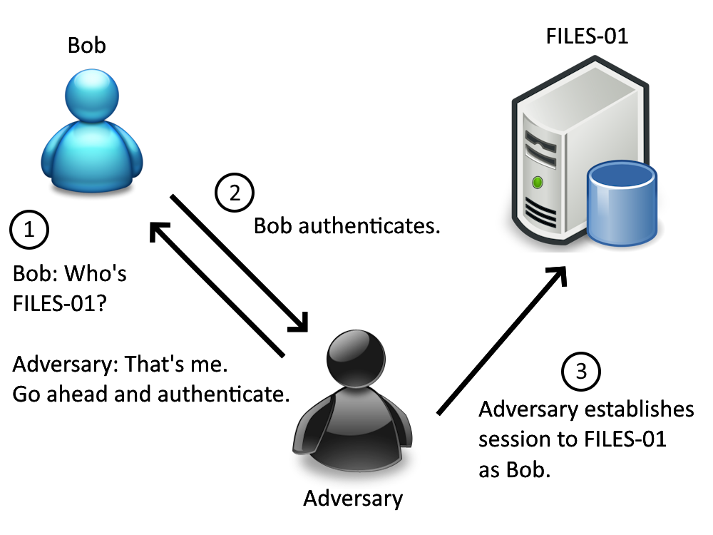
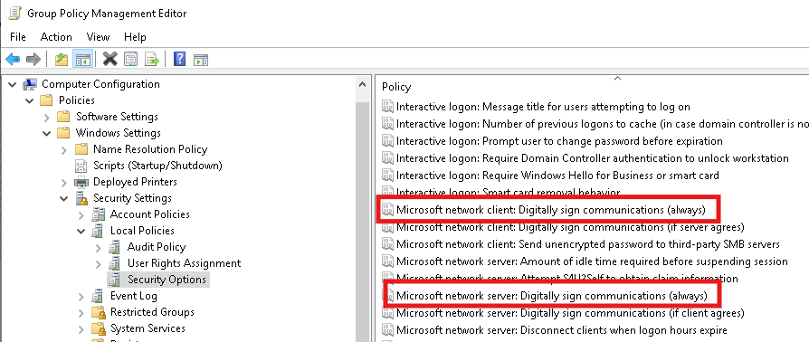
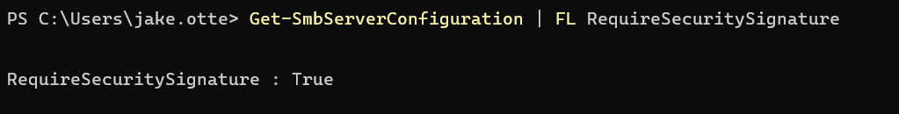
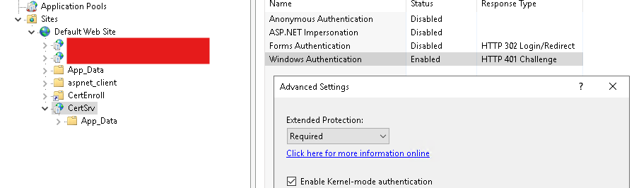
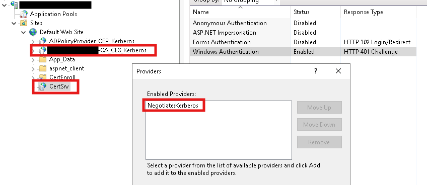
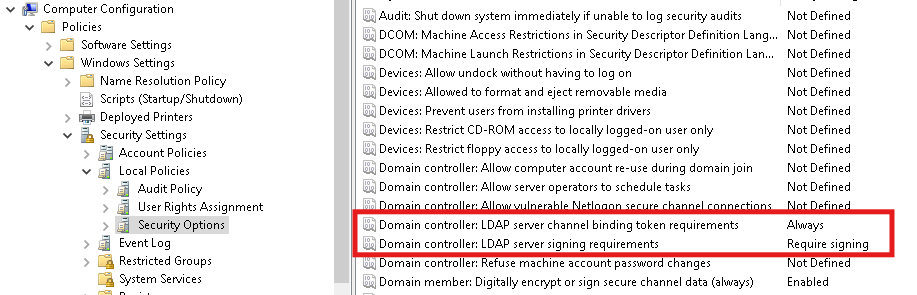
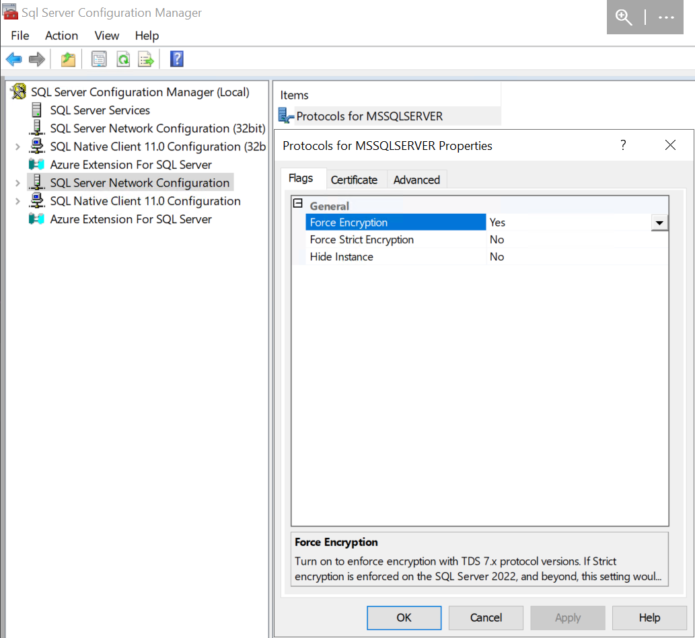
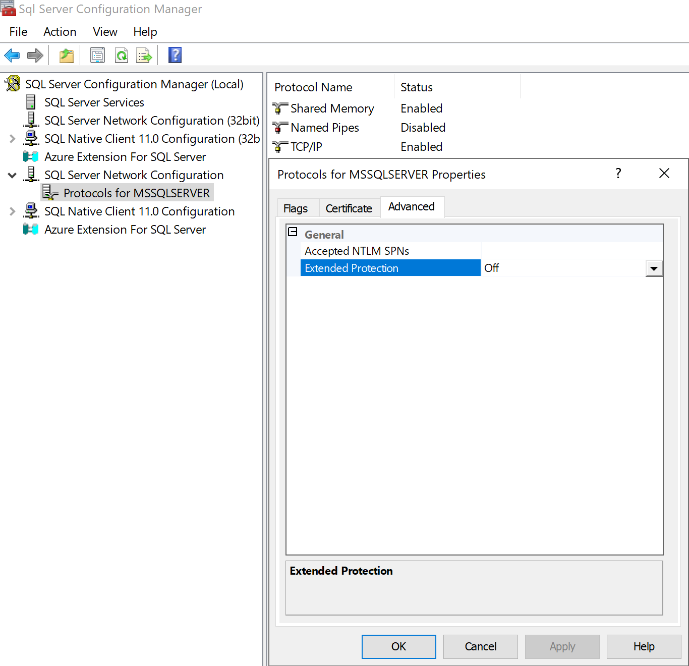
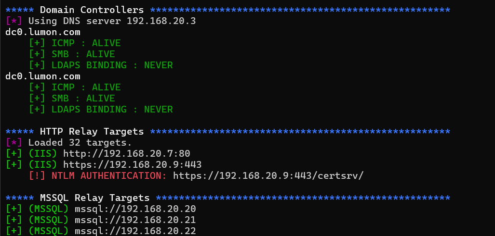

Note: This article and associated tool was written before the updates to Netexec and the release of RelayInformer. Better tools and methodologies now exist to enumerate insecure configurations in your environment.
(In)Secure Defaults
This guide article is intended to help sysadmins get control of NTLM authentication in their AD environments. Unfortunately, Microsoft has made sure that the door to your domain is wide open for attackers by default. Virtually every network penetration test I have conducted has resulted in one (or all) of the following issues, all rooting from default configurations using NTLM authentication. Each protocol can be exploited for different impact, but they can all be fixed via GPO or manual configuration.
The NTLM Relay
I will keep this overview high-level - the NTLM relay attack has been explained in great technical depth by many other blogs (see here).
As a sysadmin securing your environment, all you need to know is that attackers on your network are able to intercept authentication traffic (password hashes, basically) from end users through a variety of means. They can then forward the authentication traffic through a number of protocols (SMB, LDAP, MSSQL, etc) to one of your organization’s servers to interact with it as the intercepted user.
For example, say Bob from accounting attempts to access the file share hosted on the server FILES-01. An attacker on your network can say “Hey, I am FILES-01! Authenticate to me.” to intercept Bob’s authentication. The attacker can then forward Bob’s authentication attempt to your server DC-01 to interact with the Domain Controller, access sensitive information, and do a variety of other actions.

The NTLM authentication relay attack.
Let’s take a look at the various protocols attackers can forward authentication to, what the potential impacts are, and how to fix each one in your environment.
Step 0: SMB
Impact
Most sysadmins will know about SMB signing by now - that’s why I’ve assigned it step zero. Relaying NTLM through the SMB protocol allows for network file share access, file system access, or even full host compromise depending on the identity of the relayed user.
If Bob from accounting is a basic Domain User, relaying his authentication will just provide normal network file share access - the attacker will likely only be able to access the Accounting file share, for instance.
However, if Bob from accounting is a Domain Admin or otherwise has Administrator permissions on the target machine (perhaps Bob is a local administrator on ACCOUNTING-01?), things get much worse. The SMB protocol also allows for interaction with Remote Procedure Call functions (RPC) which allow for the registering, execution, and modification of Windows services on the host. These RPC functions enable the PSExec utility provided by Windows Sysinternals, and may similarly be used to gain a SYSTEM level command prompt shell on the victim machine. From here, attackers can fully compromise the machine to install malware, exfiltrate sensitive data, or anything else they wish.
Fix
Unauthenticated access to network file shares and SYSTEM level shells are never good. Luckily, SMB signing can be easily enabled and enforced via GPO under Computer Configuration\Windows Settings\Security Settings\Local Policies\Security Options --> Microsoft network client/server: Digitally sign communications (always). Set the value to Enabled and push the GPO update.

SMB signing GPO options.
You can verify that SMB signing is required as both a client and server on any system with the commandlets Get-SmbClientConfiguration | FL RequireSecuritySignature and Get-SmbServerConfiguration | FL RequireSecuritySignature.

Querying SMB signing configuration with PowerShell.
See Microsoft’s article for more details.
Step 1: ADCS
Impact
Relaying authentication to ADCS is not entirely intuitive. While attackers can relay authentication through the RPC protocol to interact with Certificate Services, the default configuration does not allow for this. Instead, attackers will likely look to relay authentication through HTTP/HTTPS towards your web-hosted certificate enrollment portal. The Certificate Authority’s web portal allows for easy issuing of certificates without the need for a CLI.
Unfortunately, the web-hosted enrollment application permits the use of NTLM authentication by default. Attackers can relay authentication towards your CA and request certificates on the relayed user’s behalf. While attackers can request any published certificate templates, it is most common to request a certificate used for User Authentication. This certificate usage allows an attacker to obtain a Kerberos TGT on behalf of the relayed user - fully compromising the account without a password.
It should be noted that any Active Directory account can be compromised - including computers. If attackers can coerce a domain controller to authenticate to them before relaying to your CA, the entire domain can be rapidly compromise while completely unauthenticated.
Fix
Fortunately (or perhaps unfortunately), this attack is so brutal that Microsoft themselves have published a guide to fix it.
Microsoft recommends enabling Extended Protection for Authentication (EPA) on IIS servers hosting Certificate Services. EPA relies on TLS, meaning you will need to disable HTTP entirely to use this feature. It’s available in the IIS management panel, under the CertSrv site’s Authentication menu:

Extended Protection for Authentication on an ADCS server
HTTPS can be required for the IIS server under the SSL Settings menu.
However, it is not uncommon for legacy environments to rely on HTTP. The additional mitigation provided by Microsoft is what I recommend - remove NTLM as an authentication provider entirely and replace it with Negotiate:Kerberos. Replacing NTLM will force your Certificate Authority’s web server to rely on Kerberos, a more secure authentication protocol that is significantly harder to conduct relay attacks against. The list of authentication providers can be viewed and edited from the IIS manager under the Providers... right-click menu. Please make sure to update both the CertSrv and [YOUR CA NAME HERE]-CA_CES_Kerberos IIS sites!

Kerberos authentication on an ADCS server
Note that replacing NTLM with just Negotiate is not enough! Negotiate will fall back to NTLM in certain situations; Negotiate:Kerberos will only ever use Kerberos after negotiation.
Step 2: LDAP
Impact
The impact of relaying authentication to an LDAP service hosted on your Domain Controller depends heavily on the permissions of the relayed user. If a Domain Admin is relayed, the attacker will have no problem making themselves a Domain Admin account and carrying out any further actions. If the relayed user is a Domain User or computer account, things get a little bit more nuanced.
Relayed Domain Users may be able to create a computer account as a foothold in the domain; the Default Domain Policy permits any user to create and join up to 10 computer accounts. Keep in mind computer accounts function identically to Domain Users and may be used by an attacker for a foothold into your domain. Attackers may also query directory information to enumerate the domain and other targets.
Relayed computer accounts allow for a unique attack called Resource-Based Constrained Delegation. Basically, the attacker can authenticate to the relayed computer as any other user in the domain. For example, if the attacker relays FILES-01$, they can conduct an RBCD attack to gain access as DOMAIN.LOCAL\Administrator to any services on FILES-01, including SMB. In general this results in full compromise of the server.
Fix
Microsoft has released GPO options to enforce message signing for LDAP connections and channel binding for LDAPS connections. These can be found under the Default Domain Controllers Policy at Computer Configuration\Windows Settings\Security Settings\Local Policies\Security Options, with settings Domain controller: LDAP server signing requirements and Domain controller: LDAP server channel binding token requirements.

LDAP signing GPO settings
Step 3: MSSQL
Impact
An often overlooked target for relay attacks is MSSQL servers. The impact of relay attacks on MSSQL server again depends heavily on the permissions of the relayed principal - many times relayed principals have no access or no permissions on the server. However, even low level access to the server opens up a variety of exploits beyond simple data exfiltration.
Relaying a domain user to a MSSQL server may provide read or write access to sensitive databases. In addition, MSSQL server are also commonly overly permissive and allow for privilege escalation to database administrators. Database administrators (and others, in certain scenarios) may execute stored procedures to interact with the local filesystem and execute commands. Depending on what user your MSSQL database service is running as, this can result in full compromise of the machine (if MSSQL is running as NT AUTHORITY\SYSTEM).
I can speak from experience - many organizations may have SMB/LDAP signing enabled and a locked down Certificate Authority, but always overlook MSSQL.
Fix
Luckily, the MSSQL protocol supports Extended Protection for Authentication (EPA) which can be enabled through the SQL Server Configuration Manager window. Recall that EPA requires TLS encryption of the communication channel - we’ll need to require both Force Encryption and Extended Protection for each SQL server:

MSSQL server Force Encryption setting

MSSQL server Extended PRotection for Authentication setting
Credit to subat0mik for these screenshots.
Tango
I developed a simple script to rapidly identify relaying targets in client environments called Tango. Provided a nameserver (often a Domain Controller), subnet range(s), and domain name, the script will search for LDAP/LDAPS signing failures, potential ADCS relay targets, and any available MSSQL servers. I have saved a huge amount of time on internal tests with it thus far - give it a try and see what holes need to be patched in your environment!
